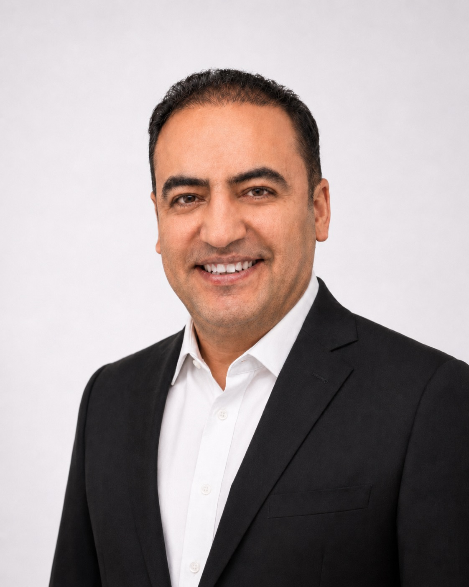

Working at the interface of sustainable fuels, green hydrogen, techno-economic analysis, life-cycle assessment, and process design.

I am a mechanical engineer with a Ph.D. from Tarbiat Modares University and a research visit at INP Toulouse / CNRS. My work focuses on sustainable fuels, green hydrogen, techno-economic analysis, life-cycle assessment, and process design.
My research experience includes low-carbon fuels and lubricants, bio-based process development, process intensification, hybrid renewable-energy systems, and decision-support tools for energy and industrial systems.
Since 2025, I have been a Visiting Faculty member at Sultan Qaboos University in Muscat, working on green-hydrogen pathways, hybrid solar–wind systems, and the techno-economic and life-cycle modelling that connects them to real deployment in the Gulf region.
My work combines engineering modelling, economic assessment and environmental accounting to evaluate technologies before scale-up.
Production, storage and use of hydrogen in renewable-rich regions, with emphasis on system design, operating thresholds and techno-economic feasibility.
Process- and system-level TEA for sustainable fuels, bio-lubricants, hybrid renewable systems and industrial energy pathways.
Environmental assessment and carbon-footprint analysis of fuel, lubricant and process pathways, including reactor-substitution and waste-to-product systems.
HOMER Pro modelling of solar–wind systems, Aspen HYSYS process simulation, reactor CFD and process intensification.
Research on green-hydrogen pathways, hybrid solar–wind systems, and techno-economic and life-cycle assessment of energy systems in arid and Gulf-region contexts.
Research and teaching in low-carbon fuels and lubricants, process intensification, design of experiments and techno-economic assessment. Founder of the BioSynergy Laboratory.
Aspen HYSYS process simulation and development of process design packages for industrial partners.
CFD modelling of oscillatory baffled reactors and multiphase mixing, hosted by Dr. Joëlle Aubin.
Invited teaching on the prospects and challenges of bio-fuels and bio-lubricants.
Eighteen peer-reviewed papers in print, with current manuscripts on renewable-energy planning, green hydrogen and life-cycle assessment. The full list is available on Google Scholar.
Teaching experience in bioenergy, modelling, design of experiments and life-cycle assessment, with postgraduate supervision in renewable fuels, bio-lubricants and process development.
Lecture slides, syllabi, datasets and announcements for my courses are available on a dedicated student page.
Please get in touch about sustainable fuels, green hydrogen, techno-economic studies, life-cycle assessment or research partnerships.